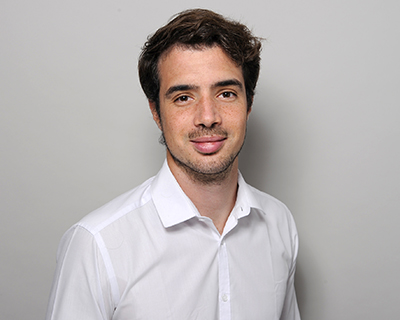

PhD Candidate in Economics
University of Zurich
Welcome to my website! I'm a fourth-year Ph.D. candidate in Economics at the University of Zurich (UZH), supervised by Lorenzo Casaburi and David Hémous. I am currently visiting the Economics Department at Columbia University, hosted by Eric Verhoogen. My research focuses on industrial development and structural change, drawing both from contemporary poor countries and historical settings in advanced economies. Methodologically, I like to combine theoretical insights with modern empirical methods.
I earned my Bachelor’s and Master’s degrees in Economics from the University of Florence (Italy) and the University of Turin (Italy), and a Master’s in Economics from the Allievi Honors Program at Collegio Carlo Alberto. I previously worked at the European Central Bank, the Bank of Italy, and as a research fellow at the University of Turin. I also served as the main student organizer of the Development Lunch Seminar series at UZH.
My research has been supported by the Unicredit Foundation, CEPR's STEG initiative, the Swiss Re Excellence Foundation, the URPP program at UZH, and Economic Research Southern Africa (ERSA).
You may find my CV here.
Research Interests
Development Economics · Industrial Policy · Structural change · Empirical Trade
News
- Sep 2026 — Presented the South Africa's project at the German Institute of Global and Area Studies (GIGA), Hamburg
- Jun 2026 — Presented the South Africa's project at the ERSA Trade Conference, Cape Town
- Jun 2026 — Presented the South Africa's project at the Nordic Conference in Development Economics, Vaxjo, Sweden
- May 2026 — Presented the South Africa's project at the South African Admin Data Workshop, UCD, Dublin
- Feb 2026 — Presented the South Africa's project at the Columbia Development Economics Colloquium, New York
- Feb 2026 — Presented the South Africa's project at the World Bank/STEG/IGC Industrial Policy for Africa Conference, Nairobi
- Feb 2026 — Presented the South Africa's project at the Trade Researchers’ Workshop (ERSA), Pretoria
- Dec 2025 — Presented the South Africa's project at Collegio Carlo Alberto (CCA) Alumni Workshop, Turin